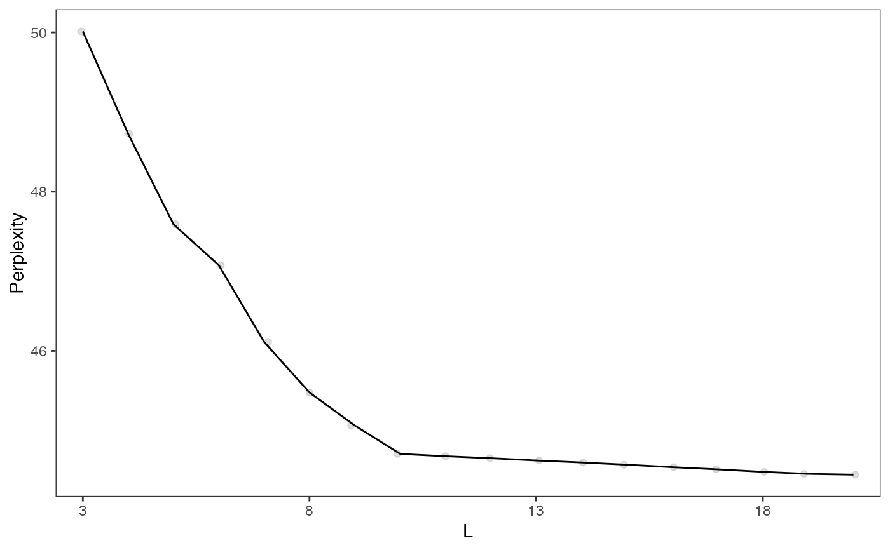

Uses the celda_G model to cluster features into modules for a range of possible L's. The module labels of the previous "L-1" model are used as the initial values in the current model with L modules. The best split of an existing module is found to create the L-th module. This procedure is much faster than randomly initializing each model with a different L.
recursiveSplitModule( x, useAssay = "counts", altExpName = "featureSubset", initialL = 10, maxL = 100, tempK = 100, zInit = NULL, sampleLabel = NULL, alpha = 1, beta = 1, delta = 1, gamma = 1, minFeature = 3, reorder = TRUE, seed = 12345, perplexity = TRUE, verbose = TRUE, logfile = NULL ) # S4 method for SingleCellExperiment recursiveSplitModule( x, useAssay = "counts", altExpName = "featureSubset", initialL = 10, maxL = 100, tempK = 100, zInit = NULL, sampleLabel = NULL, alpha = 1, beta = 1, delta = 1, gamma = 1, minFeature = 3, reorder = TRUE, seed = 12345, perplexity = TRUE, verbose = TRUE, logfile = NULL ) # S4 method for matrix recursiveSplitModule( x, useAssay = "counts", altExpName = "featureSubset", initialL = 10, maxL = 100, tempK = 100, zInit = NULL, sampleLabel = NULL, alpha = 1, beta = 1, delta = 1, gamma = 1, minFeature = 3, reorder = TRUE, seed = 12345, perplexity = TRUE, verbose = TRUE, logfile = NULL )
Arguments
| x | A numeric matrix of counts or a
SingleCellExperiment
with the matrix located in the assay slot under |
|---|---|
| useAssay | A string specifying which assay
slot to use if |
| altExpName | The name for the altExp slot to use. Default "featureSubset". |
| initialL | Integer. Initial number of modules. |
| maxL | Integer. Maximum number of modules. |
| tempK | Integer. Number of temporary cell populations to identify and
use in module splitting. Only used if |
| zInit | Integer vector. Collapse cells to cell populations based on
labels in |
| sampleLabel | Vector or factor. Denotes the sample label for each cell
(column) in the count matrix. Default |
| alpha | Numeric. Concentration parameter for Theta. Adds a pseudocount
to each cell population in each sample. Only used if |
| beta | Numeric. Concentration parameter for Phi. Adds a pseudocount to each feature module in each cell. Default 1. |
| delta | Numeric. Concentration parameter for Psi. Adds a pseudocount to each feature in each module. Default 1. |
| gamma | Numeric. Concentration parameter for Eta. Adds a pseudocount to the number of features in each module. Default 1. |
| minFeature | Integer. Only attempt to split modules with at least this many features. |
| reorder | Logical. Whether to reorder modules using hierarchical clustering after each model has been created. If FALSE, module numbers will correspond to the split which created the module (i.e. 'L15' was created at split 15, 'L16' was created at split 16, etc.). Default TRUE. |
| seed | Integer. Passed to with_seed. For reproducibility, a default value of 12345 is used. If NULL, no calls to with_seed are made. |
| perplexity | Logical. Whether to calculate perplexity for each model. If FALSE, then perplexity can be calculated later with resamplePerplexity. Default TRUE. |
| verbose | Logical. Whether to print log messages. Default TRUE. |
| logfile | Character. Messages will be redirected to a file named "logfile". If NULL, messages will be printed to stdout. Default NULL. |
Value
A SingleCellExperiment object. Function
parameter settings and celda model results are stored in the
metadata "celda_grid_search" slot. The models in
the list will be of class celda_G if zInit = NULL or
celda_CG if zInit is set.
See also
recursiveSplitCell for recursive splitting of cell
populations.
Examples
data(sceCeldaCG) ## Create models that range from L=3 to L=20 by recursively splitting modules ## into two moduleSplit <- recursiveSplitModule(sceCeldaCG, initialL = 3, maxL = 20)#>#>#>#>#>#>#>#>#>#>#>#>#>#>#>#>#>#>#>#>#>#>#>#>#>#>## Select model for downstream analysis celdaMod <- subsetCeldaList(moduleSplit, list(L = 10)) data(celdaCGSim) ## Create models that range from L=3 to L=20 by recursively splitting modules ## into two moduleSplit <- recursiveSplitModule(celdaCGSim$counts, initialL = 3, maxL = 20)#>#>#>#>#>#>#>#>#>#>#>#>#>#>#>#>#>#>#>#>#>#>#>#>#>#>